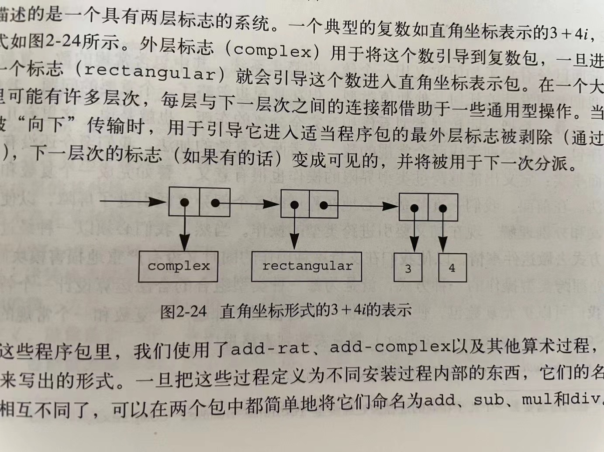

2.77
练习 2.77 Louis Reasoner 试着去求值 (magnitude z)，其中的z就是图2-24里的那个对象。令他吃惊的是，从apply-generic出来的不是5而是一个错误信息，说没办法对类型(complex)做操作magnitude。他将这次交互的情况给Alyssa P. Hacker看，Alyssa说“问题出在没有为complex数定义复数选择函数，而只是为polar和rectangular数定义了它们。你需要做的就是在complex包里加入下面这些东西”：
(put 'real-part '(complex) real-part)
(put 'imag-part '(complex) imag-part)
(put 'magnitude '(complex) magnitude)
(put 'angle '(complex) angle)
请详细说明为什么这样做是可行的。作为一个例子，请考虑表达式(magnitude z)的求值过程，其中z就是图2-24里展示的那个对象，请追踪一下这一求值过程中的所有函数调用。特别是看看apply-generic
被调用了几次？每次调用中分派的是哪个过程？

先来测试一下 apply 函数：
' expect 10
(apply + (list 1 2 3 4))
定义一个 error 函数：
(define (error msg v)
msg
)
然后定义一个 apply-generic 函数：
(define (attach-tag type-tag contents)
(cons type-tag contents)
)
(define (type-tag datum)
(if (pair? datum)
(car datum)
(error (string-append "Bad tagged datum -- TYPE-TAG" datum))
)
)
(define (contents datum)
(if (pair? datum)
(cdr datum)
(error "Bad tagged datum -- CONTENTS" datum)
)
)
(define (rectangular? z)
(eq? (type-tag z) 'rectangular)
)
(define (polar? z)
(eq? (type-tag z) 'polar)
)
(define (apply-generic op . args)
(let ((type-tags (map type-tag args)))
(let ((proc (get op (car type-tags))))
(if proc
(apply proc (map contents args))
(error
"No method for these types -- APPLY-GENERIC"
(list op type-tags)
)
)
)
)
)
(define (real-part z) (apply-generic 'real-part z))
(define (imag-part z) (apply-generic 'imag-part z))
(define (magnitude z) (apply-generic 'magnitude z))
(define (angle z) (apply-generic 'angle z))
尝试求 (magnitude z):
(magnitude z)
z 还不存在。如何表示一个复数？先定义一个 make-complex-from-real-imag 函数：
(define (make-complex-from-real-imag x y)
((get 'make-from-real-imag 'complex) x y)
)
(define z (make-complex-from-real-imag 3 4))
以上程序并不能直接执行，要能够执行，需要首先安装相应的程序包。要能安装包，需要先实现 get 和 put 函数。
(define helper (js-eval "const table = {}; function get (op, type) {console.log('getting ', op, type); return table[op][type];} function put (op,type, proc) { table[op] = table[op] || {}; table[op][type] = proc; } const exports = {get, put, table};
exports;"))
(define JSON (js-eval "JSON"))
(define (get op type)
(js-invoke helper 'get op type)
)
(define (put op type proc)
(js-invoke helper 'put op type proc)
)
有了 get 和 put 的支持，就可以写 install-package 函数了：
(define (square x) (* x x))
(define (install-rectangular-package)
;; internal procedures
(define (real-part z) (car z))
(define (imag-part z) (cdr z))
(define (make-from-real-imag x y) (cons x y))
(define (magnitude z)
(sqrt
(+
(square (real-part z))
(square (imag-part z))
)
)
)
(define (angle z)
(atan
(imag-part z)
(real-part z)
)
)
(define (make-from-mag-ang r a)
(cons
(* r (cos a))
(* r (sin a))
)
)
;; interface to the rest of the system
(define (tag x) (attach-tag 'rectangular x))
(put 'real-part 'rectangular real-part)
(put 'imag-part 'rectangular imag-part)
(put 'magnitude 'rectangular magnitude)
(put 'angle 'rectangular angle)
(put 'make-from-real-imag 'rectangular
(lambda (x y)
(tag
(make-from-real-imag x y)
)
)
)
(put 'make-from-mag-ang 'rectangular
(lambda (r a)
(tag
(make-from-mag-ang r a)
)
)
)
'done
)
(install-rectangular-package)
(define (make-from-real-imag x y)
((get 'make-from-real-imag 'rectangular) x y)
)
(define z (make-from-real-imag 3 4))
z
可以看到 z 现在是 ('rectangular 3 . 4) 的结构了。
这时，再求 (magnitude z)。它会先求值： (type-tag z)：
(type-tag z)
接着，再求 (contents z)：
(contents z)
(magnitude z)
虽然得到了正确的结果，但这个 z 还只有 rectangular 一个标志。要成为如图 2-24 的结构，需要重新构造：
(define (install-complex-package)
;; internal procedures
;; interface to the rest of the system
(put 'real-part 'complex real-part)
(put 'imag-part 'complex imag-part)
(put 'magnitude 'complex magnitude)
(put 'angle 'complex angle)
(define (tag x) (attach-tag 'complex x))
(put 'make-complex-from-real-imag 'complex
(lambda (x y)
(tag
(make-from-real-imag x y)
)
)
)
'done
)
(install-complex-package)
(define (make-complex-from-real-imag x y)
((get 'make-complex-from-real-imag 'complex) x y)
)
(define z (make-complex-from-real-imag 3 4))
z
现在 z 已经是如图 2-44 所示的结构了。再求：
(type-tag z)
(contents z)
现在推测一下 real-part 的求值过程：
(real-part (list 'complex (list 'rectangular 3 4)))
(apply-generic 'real-part (list 'complex (list 'rectangular 3 4)))
((get 'real-part 'complex) (list 'rectangular 3 4))
(real-part (list 'rectangular 3 4))
(apply-generic 'real-part (list 'rectangular 3 4))
((get 'real-part 'rectangular) (list 3 4))
(real-part (list 3 4))
(car (list 3 4))
3
(real-part z)
果然是 3。最后求 (magnitude z) 结果如下：
(magnitude z)
这个层层解套的过程比较琐碎，暂时略过。大体如 (real-part z)。
其中 apply-generic 被调用了 2 次。第一次调用分派的是 (put 'magnitude 'complex magnitude) 注入的针对 complex 类型的 magnitude；第二次调用分派的是 (put 'magnitude 'rectangular magnitude) 注入的针对 rectangular 类型的 magnitude。